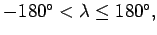
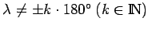
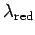
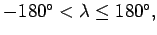
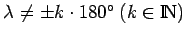
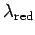

Inhalt Index DeskTop Bronstein

 Geometrie Sphärische Trigonometrie Berechnung sphärischer Dreiecke Orthodrome
Geometrie Sphärische Trigonometrie Berechnung sphärischer Dreiecke Orthodrome


Liegt eine berechnete geographische Länge  nicht im Definitionsbereich  dann ergibt sich für  die reduzierte geographische Länge  zu
nicht im Definitionsbereich  dann ergibt sich für  die reduzierte geographische Länge  zu
Man spricht in diesem Zusammenhang von Rückversetzung des Winkels in den Definitionsbereich.